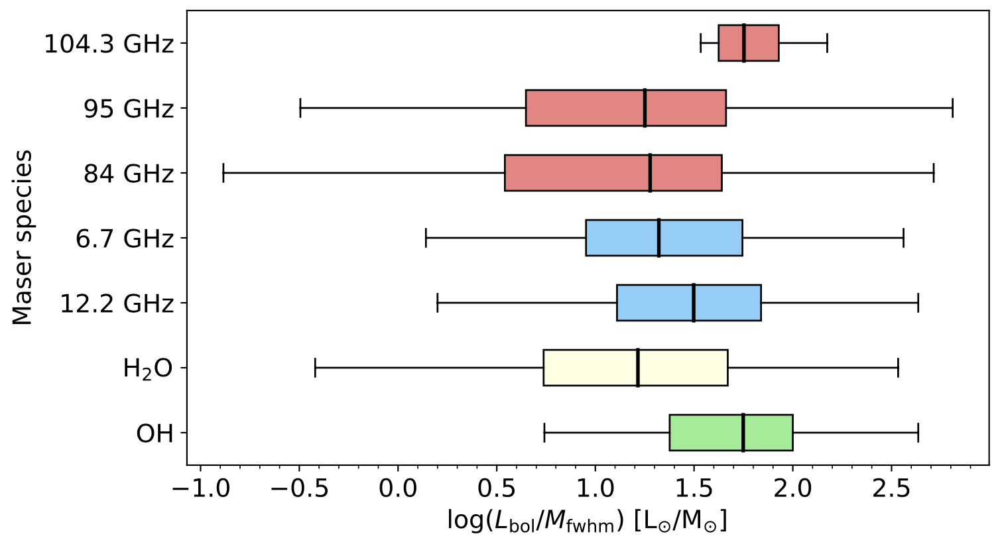
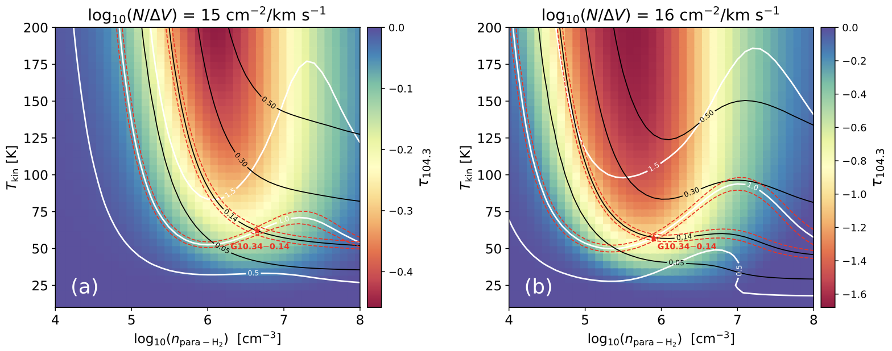

ATLASGAL: 3-mm class I methanol masers in high-mass star formation regions
We analyzed the 3-mm wavelength spectral line survey of 408 ATLASGAL clumps observed with the IRAM 30m-telescope, focusing on the class I methanol masers with frequencies near 84, 95 and 104.3 GHz. These ALTASGAL clumps cover a full evolutionary stage of high-mass star formation. This study aims to (1) to search for new class I methanol masers, (2) to statistically study the relationship between class I masers and shock tracers, (3) to compare the properties between class I masers and their host clumps, also as a function of their evolutionary stage and, (4) to constrain the physical conditions that excite multiple class I masers simultaneously.
◆ We detected 54 (50 new) masers at 84 GHz, 100 (29 new) masers at 95 GHz, 4 (4 new) masers at 104.3 GHz which increases the known number from 5 to 9 (Yang et al. 2023)

Notes -- Spectra of the 4 newly detected 104.3 GHz methanol maser sources.
◆ The properties of class I methanol masers are regulated by SiO traced shocks.
◆ Investigate the ATLASGAL clump properties.
◆ The evolutionary stage of CH3OH masers.
◆ Using line ratios of class I masers to better constrain physical conditions.
